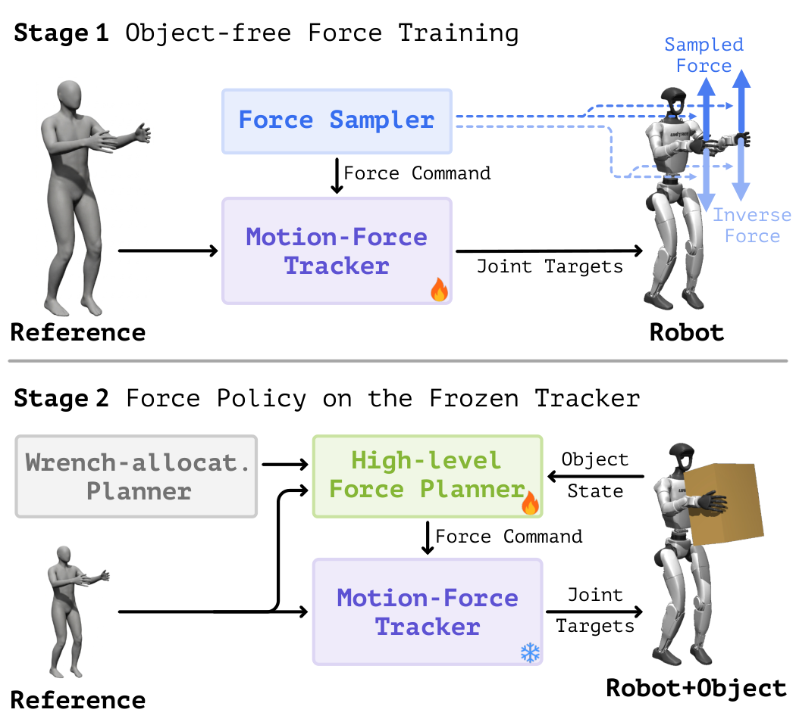

Abstract
Humanoid motion trackers know where the body should be, not how hard it should act on the world. Ctrl-F adds that missing channel: an explicit 3-D force command at each designated force body, a hand or a foot in our experiments. A motion–force tracker, trained without any object, realises the commanded force while following the reference motion, and a high-level planner chooses the command online from object state and proprioception. On a Unitree G1 this drags, pushes, raises and kicks loads up to 20 kg where a force-blind tracker moves nothing, and the high-level planner adapts its command when the object's mass changes mid-task.
Video
A pose says nothing about interaction
A position reference says where the body goes, not what it does to the world.
Method
The interface is a reference motion plus a force command. A low-level tracker follows the motion and realises whatever force it is commanded at each designated force body; a high-level planner decides that force.

Stage 1: train the tracker to realise a commanded force
Training has no objects. Each episode samples a 3-D force command for a force body and applies the opposite wrench to it. The only way to hold the reference pose under that wrench is to push back with exactly the commanded force, so the tracker learns the correspondence between a force command and the action that realises it, with no object in the loop.
The trained tracker under an external force: the hand sinks under the wrench alone and recovers once the matching command is given. (0.5×)
On hardware, the commanded force measured on a crane scale. (0.5×)
Stage 2: learn what force to command
With the tracker frozen, a planner reads the object state and the robot's proprioception and outputs one force per force body. It is trained with an analytical wrench-allocation model as its teacher and refined by reinforcement learning scored on the object's motion. Because it reads the object's state at every step, its command follows the load when the load changes.
Adaptation to a mid-task mass change in simulation; green arrows are the force commands. (0.5×)
Hardware
Unitree G1 with onboard sensing and AprilTag object pose. SONIC, a general motion tracker with public G1 weights and no force channel, is the baseline; it runs the same clips on the same objects. Loads are the weight added to the object.
Drag a crate
Wheels locked. SONIC moves only the empty crate; Ctrl-F moves all three.
Push a box
SONIC moves neither box; Ctrl-F pushes both.
Raise a box, 2 kg
SONIC's hands slide past; Ctrl-F squeezes and lifts, 9 of 10 trials.
Sweep a box, 1 kg
SONIC cannot balance on one leg and never moves the box.
Stand kick
A foot is a force body too. SONIC cannot stand on one leg; Ctrl-F kicks the empty box and the 20 kg one.

The composite task: carry a 1 kg box, walk, kick an 8 kg cart.
Load changes mid-task
Weight is added while the robot is already working. The planner's command follows the load, with no force sensor in the loop.
Drag, weight added
SONIC stops. With the command frozen at its starting value the robot slows. With the planner it holds its pace: the two Ctrl-F arms differ only in whether the command may change.
Hold a box on a rope, 1 + 1 kg
Same network. With the command held at zero the hand sinks as weight is added; with the planner it stays at the reference height.
Simulation
Nine tasks in three families: hands, feet, and hands with feet. One low-level and one high-level policy per family. Object mass is randomised between episodes and changed inside them.
The nine tasks, with the planner's force commands drawn in green.

Load sweep. Without the force command, completion falls as mass grows; Ctrl-F stays above 90 % across the range.
Try it
The trained policies, live in your browser on MuJoCo physics. In the first demo you set the force command yourself and the tracker realises it. In the other two the command comes from the learned high-level planner.
Citation
@inproceedings{ctrlf2027,
title = {Ctrl-F: Force as an Interface for Humanoid Loco-Manipulation},
author = {Anonymous},
booktitle = {IEEE International Conference on Robotics and Automation (ICRA)},
year = {2027}
}
Built on mjlab and MuJoCo Warp.